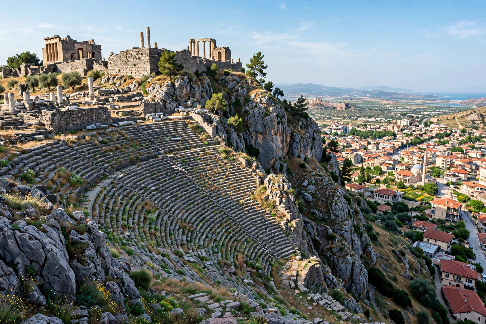

From Wikipedia, the free encyclopedia
| Pergamon | |
|---|---|
| Location | Bergama, İzmir Province, Turkey |
| Region | Aeolis / Mysia, Anatolia |
| Founded | By 5th century BC; rose under the Attalids |
| Rulers | Attalid dynasty (281–133 BC) |
| Famous for | Great Altar, Library of Pergamon, healing sanctuary of Asclepius |
| UNESCO | World Heritage Site (2014) |
Pergamon (Greek: Πέργαμον) was a rich and powerful ancient Greek city in Mysia, in northwestern Anatolia, near the modern town of Bergama in Turkey. As capital of the Hellenistic Attalid kingdom, it became one of the great cultural centres of the Greek world, famed for its library — second only to Alexandria's — its steep theatre, its healing sanctuary, and the Great Altar whose frieze of the Gigantomachy is a masterpiece of Hellenistic sculpture.
The acropolis hill was settled early, but Pergamon's rise began when the general Lysimachus stored his treasury there under the eunuch Philetaerus. Philetaerus broke with Lysimachus and founded the Attalid dynasty in 281 BC. His successors, above all Eumenes II (r. 197–159 BC), allied with Rome, defeated the Galatians and the Seleucids, and built the monumental acropolis. In 133 BC Attalus III bequeathed the kingdom to Rome, and Pergamon became the capital of the province of Asia.
The Library of Pergamon reportedly held some 200,000 scrolls. A famous (if doubtful) story told by Pliny holds that when Egypt banned papyrus exports to stifle the rival library, Pergamon perfected the use of prepared animal skins — pergamena, parchment — which later gave its name to the material. Mark Antony is said to have given the library to Cleopatra.
The Great Altar of Zeus, built under Eumenes II, was excavated by German archaeologists in the 1870s and reconstructed in Berlin's Pergamon Museum. The theatre, seating about 10,000, is among the steepest of the ancient world. Below the acropolis lay the Asclepieion, a celebrated healing centre where the physician Galen trained and practised, and the Red Basilica (Kızıl Avlu), a vast Roman temple complex. Pergamon was also one of the seven churches of Revelation.
Attalid dynasty · Pergamon Altar · Galen · Parchment
